فصل سوم — معیارهای شباهت، فاصله و هندسهٔ دادهها#
درس دادهکاوی ـ کارشناسی ارشد مهندسی کامپیوتر
پرسش محوری: «دو مشاهده چه زمانی به هم نزدیکاند؛ نزدیک از چه نظر و برای کدام تصمیم؟»
اهداف یادگیری و نقشهٔ فصل#
پس از مطالعهٔ این فصل دانشجو باید بتواند: (۱) تفاوت شباهت، ناشباهتی و فاصلهٔ متریک را توضیح دهد؛ (۲) برای سه مشاهده، نزدیکترین همسایه را با معیارهای مختلف دستی پیدا کند و چرایی تغییر جواب را تحلیل کند؛ (۳) برای متغیرهای اسمی، دودویی متقارن، دودویی نامتقارن و ترتیبی معیار مناسب بسازد؛ (۴) Manhattan، Euclidean، Chebyshev و Minkowski را محاسبه و تفسیر کند؛ (۵) به اثر واحد اندازهگیری، وزندهی و همبستگی ویژگیها حساس باشد؛ (۶) Jaccard، Cosine و Pearson را برای دادههای تنک یا برداری از هم تمیز دهد؛ (۷) دادهٔ مختلط و گمشده را با قرارداد آشکار مقایسه کند؛ (۸) KL، Jensen–Shannon و اطلاعات متقابل را در جایگاه درست آنها به کار برد؛ (۹) مفهوم هندسهٔ کرنل و فاصلهٔ گرافی را در حد نیاز دادهکاوی بفهمد؛ و (۱۰) با یک آزمون پایداری همسایگی، معیار انتخابی را ارزیابی کند.
فایلهای آموزشی: جزوهٔ PDF فصل سوم · LaTeX و شکلها و کدها در یک ZIP · برنامهٔ محاسباتی · Notebook · آزمایشگاه تعاملی آفلاین.
جایگاه فصل در دو کتاب اصلی#
در Han, Pei & Tong، ویرایش چهارم، مبنای اصلی بخش ۲٫۳، «Similarity and distance measures»، صفحات چاپی ۴۳ تا ۵۵ است؛ زیربخشها از ماتریس داده/ناشباهتی و انواع ویژگی تا Cosine، KL و معناشناسی پنهان گستردهاند. در Tan, Steinbach, Karpatne & Kumar، ویرایش دوم، مبنا بخش ۲٫۴، «Measures of Similarity and Dissimilarity»، صفحات چاپی ۷۱ تا ۱۰۰ است؛ این منبع پس از مبانی، انتخاب و تبدیل معیار، اطلاعات متقابل، کرنل، واگرایی Bregman، همبستگی/مقیاس و انتخاب معیار را نیز در بر میگیرد. شمارهٔ صفحات چاپشده داخل کتاب ملاک است، نه شمارهٔ صفحهٔ PDF.
رویکرد Han برای دانشجو یک راهنمای گامبهگام مبتنی بر نوع ویژگی میسازد؛ رویکرد Tan یادآور میشود که پیش از محاسبه باید هدف شباهت، ناوردایی مطلوب و پیامد انتخاب معیار برای تحلیل روشن شود. بنابراین متن حاضر نخست اختلاف در تصمیم را با یک مثال کوچک نشان میدهد، سپس از ویژگیهای ساده به فضای هندسی، بردارهای تنک، دادهٔ مختلط، توزیع و گراف میرسد. فاصلهٔ گرافی، تمرکز فاصله در بُعد بالا، Jensen–Shannon و آزمون پایداری همسایگی بسطهای مستقل آموزشیاند؛ آنها را بهعنوان فصل مستقل در دو مرجع معرفی نمیکنیم.
پیوند با فصل دوم. اکنون میدانیم یک ویژگی «کد منطقه» اسمی، «سطح رضایت» ترتیبی، «مبلغ خرید» نسبتی و «وجود کالای خاص» دودویی نامتقارن است. اگر همه را فقط به اعداد تبدیل و Euclidean را اجرا کنیم، احتمالاً نزدیکی به معنایی محاسبه میشود که با سؤال پژوهشی ما سازگار نیست.
۳ـ۱. مسئلهٔ آغازین: نزدیکترین مشتری کدام است؟#
فرض کنید یک مشتری جدید را با نقطهٔ \(A=(0,0)\) نشان میدهیم. دو مشتری تاریخی دارای ویژگیهای عددیِ از قبل همواحد و هممقیاسشدهاند: \(B=(3,4)\) و \(C=(0,6)\). برای سادگی، مختصات و همهٔ دادهها در این مثال ساختگی آموزشی هستند.
از روی شکل ممکن است \(B\) نزدیکتر به نظر برسد؛ اما اگر «هزینهٔ تفاوت» را به شکل مجموع اختلاف هر مؤلفه بسنجیم، \(C\) نزدیکتر خواهد شد. سه محاسبهٔ دستی:
پس Manhattan نزدیکترین را \(C\) و Euclidean و Chebyshev نزدیکترین را \(B\) تشخیص میدهند؛ هیچیک صرفاً از روی این سه نقطه «اشتباه ریاضی» نکردهاند. اختلاف بر سر این است که «نزدیکبودن» را چگونه عملیاتی تعریف کردهایم. این موضوع در کشف خوشه، بازیابی مشتری مشابه، کشف ناهنجاری و جستوجوی همسایه تکرار میشود.

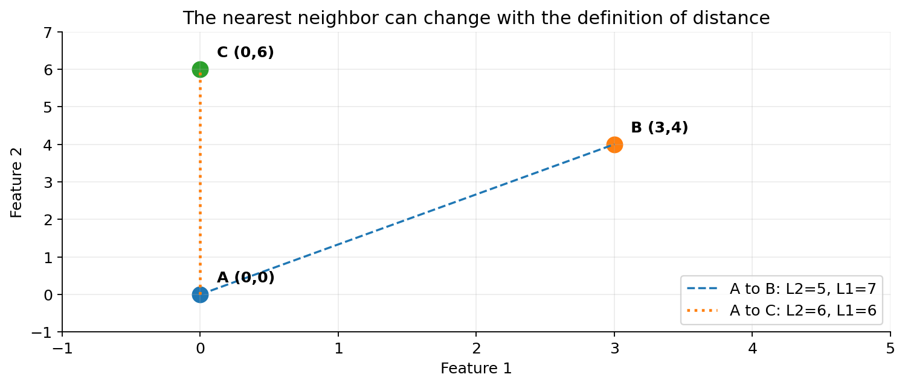
Fig. 23 شکل ۳ـ۱. سه مشاهدهٔ ساختگی: انتخاب نزدیکترین همسایه با تغییر معیار فاصله عوض میشود. شکل محاسباتی تألیفی.#
سؤال پژوهشی اصلی: اگر مشتریان بهجای دو مؤلفهٔ هممقیاس، شامل درآمد، جنس کالا، میزان رضایت و صدها نشانگر «خرید/نخریدن» باشند، کدام یک از این معیارها هنوز قابل دفاع است؟ پاسخ فصل بر پایهٔ معنا، نوع، واحد، توزیع، وزن و هدف کشف شکل میگیرد.
۳ـ۲. شباهت، ناشباهتی و فاصلهٔ واقعی یک چیز نیستند#
فرض کنید \(x\) و \(y\) دو مشاهده باشند. شباهت یا \(s(x,y)\) هرچه بزرگتر باشد نشاندهندهٔ شباهت بیشتر است؛ ناشباهتی یا \(\delta(x,y)\) برعکس عمل میکند. در برخی کاربردها مقدار شباهت بین صفر و یک است، اما همهٔ شباهتها چنین نیستند؛ برای مثال Cosine میتواند منفی باشد، و یک کرنل میتواند بیش از یک شود. اغلب فاصلهها صفر را برای مشاهدهٔ یکسان در نظر میگیرند، ولی الزاماً سقف یک ندارند.
برای اینکه یک تابع \(d\) روی فضای مشاهدهها متریک (Metric) باشد، معمولاً چهار شرط را لازم داریم:
آخرین رابطه نامساوی مثلثی است. معنایش آن است که سفر غیرمستقیم از \(x\) به \(z\) از طریق \(y\) نباید از فاصلهٔ مستقیمِ تعریفشده کوتاهتر باشد. این شرط نه فقط زیبایی ریاضی، که مبنای برخی ساختارهای جستوجوی سریع مانند درختهای متریک است.
مثال نقض مهم: برای بردارهای \(x=(1,0)\)، \(y=(1,1)\)، \(z=(0,1)\)، اگر \(d=1-\cos\) تعریف کنیم:
بنابراین \(1>0.586\) و نامساوی مثلثی نقض میشود: \(1-\cos\) لزوماً متریک نیست. همچنین دو بردار مثبتِ همجهت میتوانند Cosine برابر یک داشته باشند در حالی که یکسان نیستند؛ پس \(1-\cos\) در فضای تمام بردارهای غیرصفر، شرط هویت را هم نقض میکند.
آیا میتوان شباهت را به فاصله تبدیل کرد؟#
اگر \(0\le s\le1\)، گاهی \(\delta=1-s\) به کار میرود. اما این تبدیل بهتنهایی متریکبودن را تضمین نمیکند. برای یک فاصلهٔ نامنفی میتوان \(s=1/(1+d)\) یا \(s=e^{-d}\) ساخت. این تبدیلها ترتیب فاصلهها را حفظ میکنند، ولی نسبت آنها را حفظ نمیکنند: فاصلهٔ ۱۰ ده برابر فاصلهٔ ۱ است، در حالی که شباهتهای حاصل از \(1/(1+d)\) برابر \(1/11\) و \(1/2\) هستند. برای مقایسهٔ نتایج دو آزمایش باید خود تبدیل، قرارداد و واحد گزارش شود.
تمرین کوتاه: چرا \(d(x,y)^2\) با وجود نامنفیبودن و تقارن، لزوماً متریک نیست؟ برای نقاط \(0,1,2\) روی خط، \(d^2(0,2)=4\) و \(d^2(0,1)+d^2(1,2)=2\)؛ شرط مثلثی از بین میرود.
۳ـ۳. ماتریس داده و ماتریس نزدیکی؛ دو شیوهٔ دیدن یک مجموعه#
در فصل دوم، دادهها را بهصورت \(X\in\mathbb{R}^{n\times p}\) دیدیم: \(n\) مشاهده و \(p\) ویژگی. اگر برای همهٔ زوجها فاصله حساب کنیم، ماتریس \(D\in\mathbb{R}^{n\times n}\) حاصل میشود که در حالت متریک، متقارن و دارای قطر اصلی صفر است.
برای سه نقطهٔ بخش آغازین، ماتریس Euclidean چنین است:
از آنجا که \(d_2(B,C)=\sqrt{(3-0)^2+(4-6)^2}=\sqrt{13}\approx3.606\)، نزدیکترین زوج کل مجموعه \(B,C\) هستند؛ این پرسش با «نزدیکترین همسایهٔ A کدام است؟» تفاوت دارد.

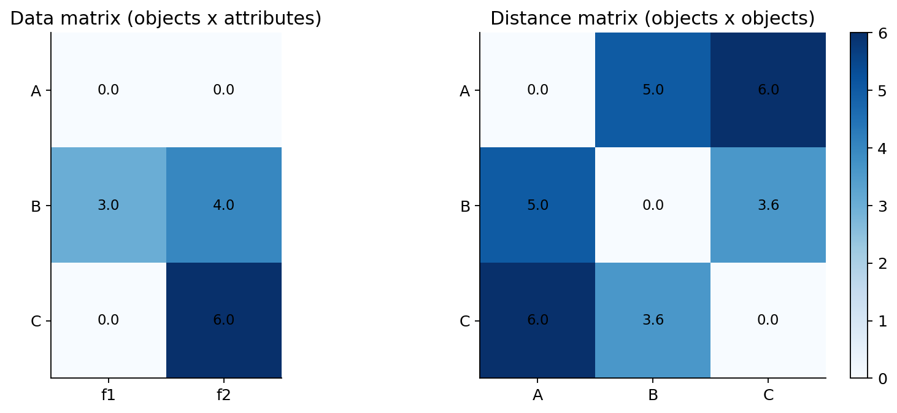
Fig. 24 شکل ۳ـ۲. ماتریس داده (سه ردیف، دو ویژگی) در برابر ماتریس فاصله (سه ردیف، سه ستون). مقدارهای شکل با محاسبهٔ دستی متن سازگارند.#
مزیت ماتریس فاصله آن است که برای دادهٔ غیرجدولی نیز مناسب است: دو دنباله، دو مسیر شهری یا دو گراف را میتوان مقایسه کرد حتی اگر خود آنها بردار ویژگی همطول نداشته باشند. هزینهٔ این آزادی، حافظه و محاسبه است: ذخیرهٔ ماتریس کامل حدود \(n^2\) عدد میخواهد؛ برای \(n=100{,}000\)، ۱۰ میلیارد مقدار و با عدد ۸بایتی حدود ۸۰ گیگابایت (بدون سربار) لازم میشود. در عمل، استفاده از ماتریس متقارن فشرده، همسایههای محدود یا محاسبهٔ برحسب تقاضا میتواند مناسبتر باشد.
هزینهٔ علمی استفاده از ماتریس فاصله#
وقتی فقط \(D\) را در اختیار داریم، معنای ویژگیها بهطور مستقیم در ماتریس دیده نمیشود. بنابراین باید در گزارش همراه \(D\) این اطلاعات بمانند: نوع ویژگیها، روش نرمالسازی، برخورد با دادهٔ گمشده، وزنها، نسخهٔ معیار و ترتیب سطرها. یک ماتریس بدون این فراداده، برای بازتولید علمی ناکافی است.
۳ـ۴. خانوادهٔ Minkowski و هندسهٔ فاصله در فضای عددی#
اگر \(x=(x_1,\dots,x_p)\) و \(y=(y_1,\dots,y_p)\) دو بردار عددی باشند، خانوادهٔ Minkowski برای \(r\ge1\) چنین تعریف میشود:
این تعریف از اختلاف هر ویژگی شروع میکند، اختلافهای بزرگ را با توان \(r\) برجسته میکند، سپس با ریشهٔ \(r\) به مقیاس واحد اولیه برمیگرداند. بنابراین \(r\) کنترل میکند که چند اختلاف متوسط در مقایسه با یک اختلاف خیلی بزرگ چه وزنی داشته باشند.
سه حالت رایج عبارتاند از:
پرسش: چرا «دایره» همیشه دایره نیست؟ مجموعهٔ نقاطی که فاصلهشان از مبدأ برابر یک باشد، برای \(L_2\) دایره، برای \(L_1\) لوزی و برای \(L_\infty\) مربع است. محورهای داده یکساناند؛ اما «توپ واحد» و مفهوم همسایگی تغییر کردهاند. در \(L_\infty\) بدترین اختلاف یک ویژگی تعیینکننده است؛ برای کنترل خطای بیشینه کاربرد دارد. در \(L_1\) همهٔ اختلافها بهصورت جمع هزینه حساب میشوند؛ در \(L_2\) اختلافهای بزرگتر سهم نسبی بیشتری دارند.

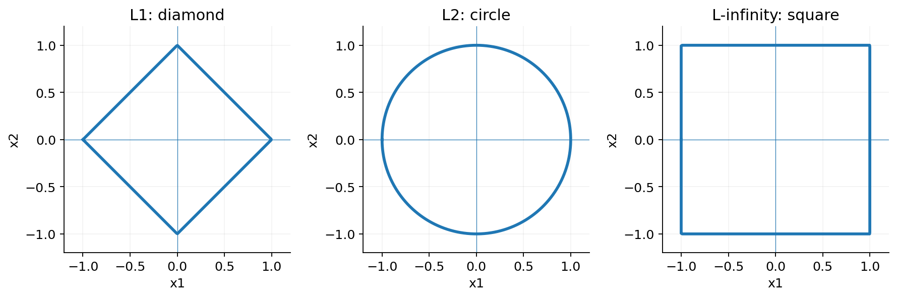
Fig. 25 شکل ۳ـ۳. توپ واحد برای سه نرم متداول. تصویر از تعریفهای ریاضی رسم شده و بازنشر شکل کتاب نیست.#
چرخش دستگاه مختصات نیز میتواند مهم باشد#
Euclidean علاوه بر جابهجایی همزمان دو نقطه، نسبت به چرخش متعامد دستگاه مختصات ناورداست: اگر \(R^TR=I\)، آنگاه \(\|R(x-y)\|_2=\|x-y\|_2\). برای \(L_1\) چنین تضمین عمومی نداریم. اختلاف \((1,0)\) را ۴۵ درجه بچرخانید؛ اختلاف تازه \(\left(1/\sqrt2,1/\sqrt2\right)\) است. فاصلهٔ \(L_2\) همچنان ۱ است، اما \(L_1\) از ۱ به \(\sqrt2\) تغییر میکند. بنابراین وابستگی محورهای ویژگی و معنای چرخش نیز در انتخاب هندسه مهماند.
محاسبهٔ دستی مرحلهبهمرحله#
برای \(x=(1,2,4)\) و \(y=(4,4,8)\)، قدرمطلق اختلافها \((3,2,4)\) است. بنابراین
این مقدارها را نباید بدون توجه به تعریف معیار با هم از نظر «خوب یا بد بودن نزدیکی» مقایسه کرد؛ همسایهبندی و آستانهها باید برای همان معیار تنظیم شوند.
اثبات شهودی نامساوی مثلثی#
برای \(L_1\)، در هر ویژگی \(|x_j-z_j|\le|x_j-y_j|+|y_j-z_j|\) است؛ جمع آنها شرط مثلثی را میدهد. برای \(L_2\) قضیه از نامساوی Cauchy–Schwarz و برای \(r\ge1\) از نامساوی Minkowski نتیجه میشود. برای \(0<r<1\)، همان فرمول یک شبهنرم است و شرط مثلثی ممکن است نقض شود؛ نباید آن را بدون توضیح «فاصلهٔ متریک Minkowski» نامید.
۳ـ۵. واحد، مقیاس و وزن ویژگیها: یک دام هندسی#
فرض کنید در ارزیابی مشابهت مشتری، یک ویژگی «تعداد خرید ماهانه» و دیگری «مبلغ خرید به ریال» باشد. اگر بدون تبدیل واحد، Euclidean روی هر دو اعمال شود، مؤلفهٔ ریالی میتواند کل نتیجه را تعیین کند. این تصمیم از سؤال پژوهشی نیامده است؛ محصول یک واحد اندازهگیری دلخواه است. تغییر ریال به هزار ریال نباید بدون تصمیم آگاهانه، مشتری مشابه را عوض کند.
مثال عددیِ تغییر رتبه: \(A=(0,0)\)، \(B=(3,0)\) و \(C=(0,5)\). در Euclidean اولیه \(d(A,B)=3\) و \(d(A,C)=5\)، پس \(B\) نزدیکتر است. اکنون فقط ویژگی نخست را در ۲ ضرب کنیم: \(B'=(6,0)\) و \(C'=(0,5)\). بدون تغییر در پدیدهٔ واقعی، فاصلهها \(6\) و \(5\) میشوند و \(C\) نزدیکتر خواهد بود.

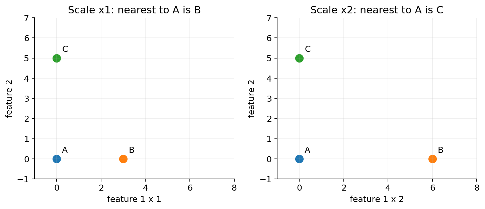
Fig. 26 شکل ۳ـ۴. وارونگی نزدیکترین همسایه صرفاً با تغییر مقیاس یک محور؛ تمرین بازتولیدپذیر.#
سه راه متداول و حدود اعتبار آنها#
۱. تبدیل به مقیاس قابل قیاس: برای ویژگی \(j\)، \(z_{ij}=(x_{ij}-\mu_j)/\sigma_j\) یا \(u_{ij}=(x_{ij}-\min_j)/(\max_j-\min_j)\). این فرمولها معنای فاصله را تغییر میدهند و در صورت \(\sigma_j=0\) یا بازهٔ صفر، تعریف مستقلی میخواهند. آمارههای مقیاسبندی باید فقط از بخش آموزش یا دادهٔ مجاز استخراج شوند؛ استفاده از کل داده در ارزیابی پیشبینی، نشت اطلاعات میآورد. جزئیات این تبدیلها در فصل چهارم میآیند.
۲. وزندهی شفاف: میتوان تعریف کرد \(d_{r,w}(x,y)=(\sum_jw_j|x_j-y_j|^r)^{1/r}\)، با \(w_j>0\). وزن صفر یک بعد را حذف میکند؛ اگر ویژگی حذفشده تنها عامل تفاوت دو مشاهده باشد، شرط هویت روی فضای خام دیگر برقرار نیست. پس وزن باید از اهمیت مسئله و اعتبارسنجی برآید، نه صرفاً از سلیقه.
۳. فاصلهٔ مبتنی بر دامنهٔ معتبر: در برخی ویژگیها مانند درصد پیشرفت، تقسیم اختلاف بر بازهٔ قابلقبول دامنه (\(R_j\)) منطقی است. اگر دامنهٔ واقعی نامعلوم است، استفاده از بیشینه و کمینهٔ نمونه ممکن است به دادههای پرت حساس باشد.
نکتهٔ روششناختی: قبل از انتخاب معیار، پاسخ دهید آیا دو واحد اختلاف درآمد همان هزینهٔ دو واحد اختلاف سن دارند؟ اگر نه، Euclidean روی دادهٔ خام تعریف مسئله را بازتاب نمیدهد.
۳ـ۶. متغیرهای اسمی و ترتیبی: عدد همیشه «اندازه» نیست#
ویژگی اسمی: فقط برابر یا نابرابر#
در «نوع قرارداد» با مقادیر A,B,C، هیچ ترتیبی وجود ندارد. اگر به این سه برچسب کدهای ۱،۲،۳ بدهیم، فاصلهٔ \(|1-3|=2\) معنایی ندارد؛ تغییر شیوهٔ کدگذاری فاصله را تغییر میدهد. برای یک ویژگی اسمی، یک تعریف محتاطانه چنین است:
برای \(p\) ویژگی اسمیِ دارای وزن برابر، اگر \(m\) ویژگی برابر باشند، \(s=m/p\) و \(d=1-m/p\). مثال: دو پرونده در ۳ ویژگی «استان، نوع محصول، کانال خرید» بهترتیب در ۲ ویژگی برابرند. پس \(s=2/3\) و \(d=1/3\)؛ حتی اگر برچسب «کانال خرید» به عدد دیگری تبدیل شود، نتیجه تغییر نمیکند. این ساختار در Han §۲٫۳٫۲ و Tan §۲٫۴٫۲ بررسی شده است.
ویژگی ترتیبی: اطلاعات بیشتر از اسمی، کمتر از کمی#
فرض کنید سطح خدمت پنج حالت مرتب «بسیار کم، کم، متوسط، زیاد، بسیار زیاد» دارد. اگر رتبهها \(1,2,3,4,5\) باشند، میتوان برای مقایسهٔ عملیاتی رتبه را به \(z=(r-1)/(5-1)\) تبدیل کرد. برای سطح «کم» (\(r=2\)) و «زیاد» (\(r=4\)):

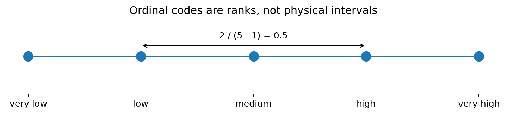
Fig. 27 شکل ۳ـ۵. مدل فاصلهٔ مبتنی بر رتبه؛ فاصلهٔ یکسان بین رتبهها یک فرض مدلسازی است، نه ویژگی ذاتی مقیاس ترتیبی.#
این نگاشت بهطور ضمنی فاصلهٔ پلههای مجاور را برابر میگیرد. در پیمایش رضایت مشتری ممکن است اختلاف روانشناختی «خیلی بد» تا «بد» با اختلاف «خوب» تا «عالی» یکسان نباشد. اگر چنین فرضی قابل دفاع نیست، میتوان از فاصلهٔ بر اساس جدول هزینهٔ کارشناسی، یا آزمون حساسیت نسبت به چند نگاشت ترتیبی استفاده کرد.
۳ـ۷. دودویی متقارن و نامتقارن: چرا صفرهای مشترک میتوانند گمراه کنند؟#
در یک فروشگاه با کاتالوگ ۱۰۰۰ محصول، دو سبد خرید را در نظر بگیرید: سبد اول فقط کالاهای a و b، سبد دوم فقط کالاهای a و c را دارد. هر بردار دودویی ۱۰۰۰ مؤلفه دارد و ۱ یعنی «کالا در سبد وجود دارد».
برای مقایسهٔ این دو سبد، جدول شمارش مشترک زیر را میسازیم:
سبد دوم: ۱ |
سبد دوم: ۰ |
|
|---|---|---|
سبد اول: ۱ |
\(q=1\) |
\(r=1\) |
سبد اول: ۰ |
\(s=1\) |
\(t=997\) |
به زبان ساده: هر دو a را دارند، فقط اولی b را دارد، فقط دومی c را دارد و در ۹۹۷ کالا هر دو مقدار صفر دارند. آیا این دو سبد «۹۹٫۸ درصد شبیهاند»؟ تنها اگر نبودن هر یک از ۹۹۷ کالا را یک دلیل مستقل و معنادار برای شباهت بدانیم.

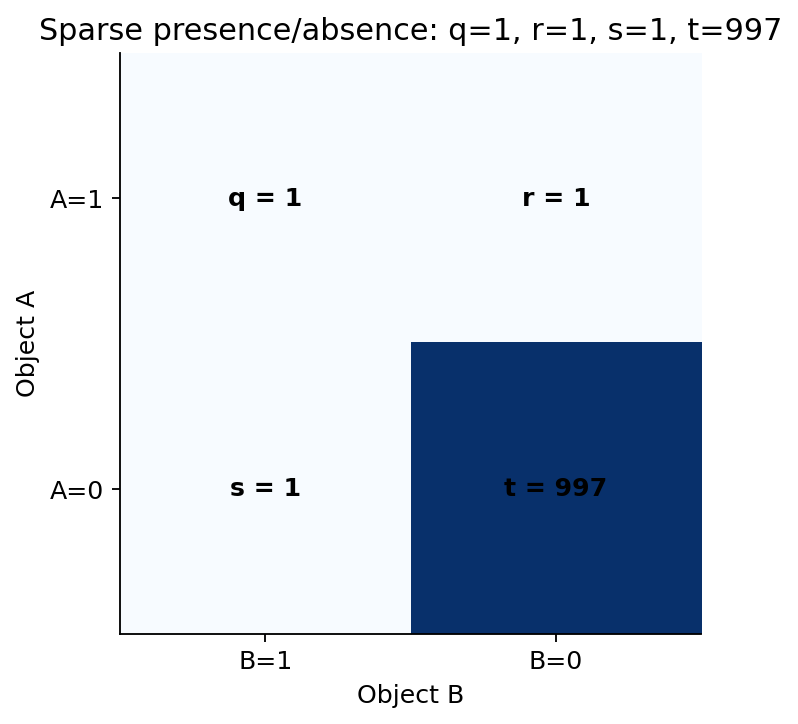
Fig. 28 شکل ۳ـ۶. جدول توافق دودویی در دادهٔ بسیار تنک. خانهٔ \(t\) بزرگ است ولی لزوماً شاهد شباهت نیست.#
ضریب تطابق ساده (Simple Matching Coefficient؛ SMC) برای دودویی متقارن است:
این تعریف برای موقعیتی مناسب است که توافق بر هر دو حالت «وجود» و «نبود» ارزش اطلاعاتی مشابه دارد؛ مثلاً در رشتهٔ کدهای دودویی با معنای مساوی دو حالت.
ضریب Jaccard برای دودویی نامتقارن، جایی که «وجود ویژگی» مهمتر از نبود آن است، چنین است:
به عبارت دیگر، از میان سه کالایی که دستکم در یکی از دو سبد وجود دارد، فقط یکی مشترک است. حال نتیجه هم با معنای کسبوکاری سؤال سازگارتر است. فاصلهٔ Jaccard روی مجموعهها \(d_J=1-J=(r+s)/(q+r+s)=2/3\) است.

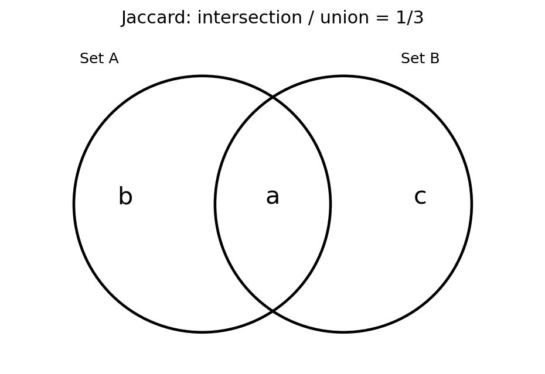
Fig. 29 شکل ۳ـ۷. اشتراک و اجتماع دو مجموعهٔ خرید. این نمایش همان محاسبهٔ دستی Jaccard را نشان میدهد.#
قرارداد مرزی: اگر هر دو مجموعه خالی باشند، کسر \(0/0\) تعریف نمیشود. در کد فصل برای دو مجموعهٔ خالی، شباهت Jaccard را ۱ قرارداد میکنیم؛ این انتخاب در بعضی کاربردها مطلوب نیست و باید مستند شود. مستندات SciPy نیز فاصلهٔ Jaccard دو بردار همهصفر را صفر تعریف میکند. نبود مقدار (missing) به معنی صفر نیست و نباید پنهانی به همین قرارداد فروکاسته شود.
فاصلهٔ Hamming و تفاوت آن با Jaccard#
در بردار دودویی با طول ثابت، \(d_H=r+s\) شمار مکانهای متفاوت است؛ اگر بر طول \(p\) تقسیم شود، نسبت ناهماهنگی خواهیم داشت. برای سبدهای مثال، \(d_H=2\)، Hamming نسبی \(2/1000=0.002\) و فاصلهٔ Jaccard برابر \(2/3\) است. تناقضی وجود ندارد: Hamming هزینهٔ تفاوت را نسبت به همهٔ مکانها میسنجد، Jaccard نسبت به مکانهای حاضر در اجتماع. در دادهٔ تنک انتخاب مخرج تعیینکننده است.
آزمون تفکر: با اضافهشدن ۹۰۰۰ کالای جدید که هیچکدام در دو سبد وجود ندارند، SMC به \(0.9998\) میرسد، اما Jaccard همچنان \(1/3\) میماند. معیاری که با افزودن ویژگیهای بیاهمیت اینقدر تغییر میکند، برای مسئلهٔ یافتن سبدهای مشابه مناسب نیست.
۳ـ۸. شباهت کسینوسی: مقایسهٔ جهت بهجای مقدار#
در تحلیل متن، هر سند میتواند بردار شمار واژهها یا وزنهای TF–IDF باشد. دو سند با موضوع یکسان ممکن است به سبب طول متفاوت، مقادیر بسیار متفاوت داشته باشند. اگر هدف یافتن شباهت الگوی استفاده از واژهها باشد، «جهت بردار» اغلب از «طول بردار» مناسبتر است.
برای بردارهای غیرصفر \(x,y\)، کسینوس زاویه چنین تعریف میشود:
این فرمول از تعریف ضرب داخلی \(x^Ty=\|x\|\|y\|\cos\theta\) نتیجه میشود. وقتی \(x\) و \(y\) در راستای یکدیگرند، زاویهٔ بین آنها صفر و Cosine برابر ۱ است. برای \(x=(1,2)\) و \(y=(2,4)=2x\):
بااینحال \(d_2(x,y)=\sqrt5\ne0\). بنابراین Cosine، مقدار را نادیده میگیرد و جهت را مقایسه میکند؛ برای تشخیص اختلاف سطح فروش یا حجم خرید، گاهی چنین ناورداییای مطلوب نیست. برای دادههای غیرمنفی Cosine بین صفر و یک است؛ برای بردارهای با مؤلفهٔ منفی، مقدار آن در \([-1,1]\) قرار دارد. برای بردار صفر فرمول تعریف نشده و باید سیاست مستقلی داشت.

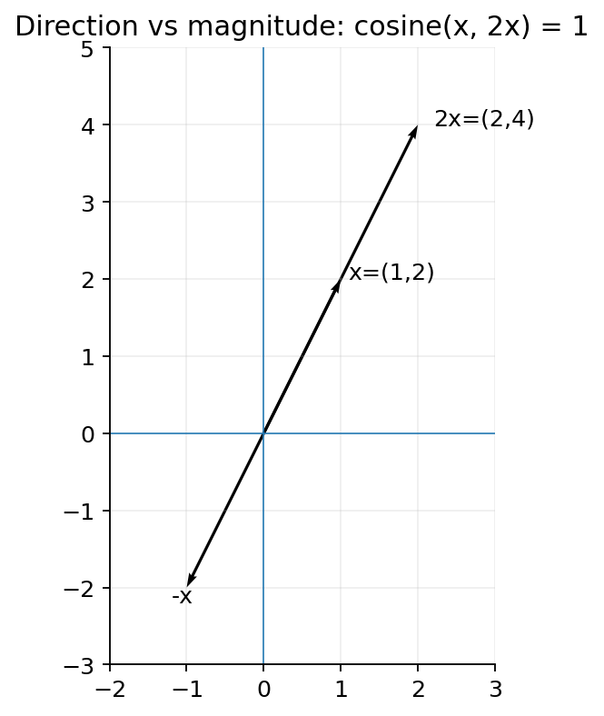
Fig. 30 شکل ۳ـ۸. \(x\) و \(2x\) از نظر Cosine کاملاً همجهتاند، ولی فاصلهٔ Euclidean آنها صفر نیست. بردار \(-x\) کسینوس \(-1\) دارد.#
محاسبهٔ دستی روی دو سند کوچک#
فرض کنید واژگان فقط «فروش، داده، تصویر» باشند و بردار سندهای فرضی \(u=(2,1,0)\) و \(v=(4,2,0)\) باشند. بردار دوم دو برابر اول است، پس Cosine برابر ۱ است. سند سوم \(w=(0,1,2)\) را در نظر بگیرید:
چنین بردارهایی را میتوان با وزنهای واژهای ساخت. انتخاب وزنسازی واژگان (مثلاً TF–IDF)، حذف واژههای پرتکرار و زبان سند، پیش از Cosine به همان اندازه اهمیت دارد؛ معیار بهتنهایی معنای متن را نمیفهمد. در ادامه دربارهٔ «شباهت معناییِ آموختهشده» بحث میکنیم.
Jaccard تعمیمیافته و شباهت معناییِ آموختهشده#
برای بردارهای عددیِ غیرمنفی، یک تعمیم معروف با نام Tanimoto یا extended Jaccard در برخی کاربردها به کار میرود:
مشروط به اینکه مخرج مثبت باشد. این تعریف برای بردارهای دودویی به Jaccard مجموعهای فروکاسته میشود، ولی برای شمارشهای وزنی لزوماً با Jaccard دودویی یکسان نیست. مثال: \(x=(3,0)\) و \(y=(1,1)\)؛ \(T=3/(9+2-3)=3/8=0.375\) ولی اگر فقط وجود مؤلفهها را بسنجیم، مجموعههای \({1}\) و \({1,2}\) داریم و \(J=1/2\). قبل از استفاده از نام Jaccard باید روشن شود ورودی دودویی است یا وزندار و دقیقاً کدام فرمول استفاده میشود.
گاهی دو سند دربارهٔ یک موضوعاند، ولی بهسبب استفاده از واژههای مترادف اشتراک واژگانی ندارند. در فضای شمارش خام، ضرب داخلی ممکن است صفر شود؛ در یک نمایش معناییِ آموختهشده، بردارهای دو سند ممکن است به یکدیگر نزدیک باشند. این همان انگیزهٔ بحث «شباهت با معنای پنهان» در Han §۲٫۳٫۹ است. بااینحال نزدیکبودن در یک مدل تعبیهساز (embedding) ادعای درستیِ معنایی را تضمین نمیکند: دامنهٔ آموزش، زبان فارسی، دگرگونی داده و ارزیابی انسان/وظیفه مهماند. هیچ مدل تعبیهساز معینی در این فصل بر دادهٔ واقعی ارزیابی نشده است.
Cosine با همبستگی Pearson چه تفاوتی دارد؟#
همبستگی Pearson را میتوان Cosine دو بردار مرکزشده نسبت به میانگین دانست:
برای \(x=(1,2,3)\) و \(y=(11,12,13)\)، بردارهای مرکزشده هر دو \((-1,0,1)\) هستند و بنابراین \(r=1\). اما Cosine خام آنها برابر ۱ نیست. Pearson به جابجایی ثابت و ضرب در ضریب مثبت ناوردا است؛ Cosine خام فقط نسبت به ضرب مثبت ناوردا است. اگر هدف شباهت نوسانهای یکسان با سطح پایهٔ متفاوت باشد، همبستگی میتواند معنادارتر شود؛ اگر سطح مطلق اهمیت دارد، ممکن است اطلاعات مفید را حذف کند.

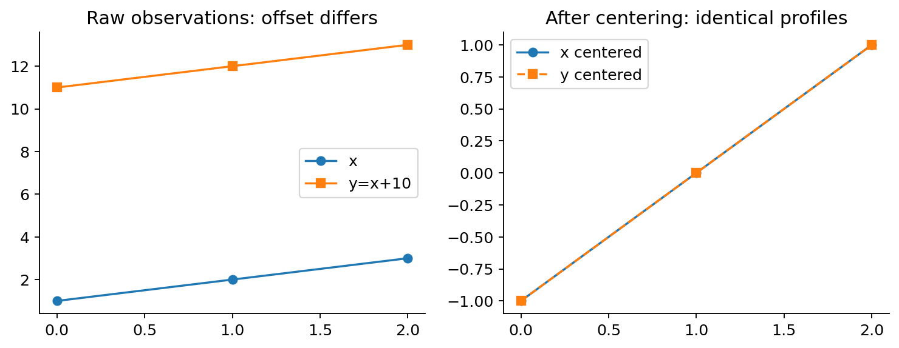
Fig. 31 شکل ۳ـ۹. دو سری با اختلاف ثابت در سطح پایه: بعد از مرکزکردن کاملاً منطبق میشوند. این مثال بهمعنای مناسببودن Pearson برای هر سری زمانی نیست؛ روند، تأخیر و خودهمبستگی باید بررسی شوند.#
۳ـ۹. ماهالانوبیس: وقتی پراکندگی و همبستگی، هندسه را عوض میکنند#
تا اینجا فرض کردهایم هر محور مستقل و با یک مقیاس مشخص است. اما اگر دو ویژگی با هم تغییر کنند چه؟ برای مثال «مبلغ سفارش» و «تعداد اقلام» ممکن است همبسته باشند. در چنین حالتی حرکت روی جهت اصلی دادهها معمولتر از حرکت عمود بر آن است. فاصلهٔ Euclidean از این اطلاعاتِ توزیعی بیخبر است.
اگر \(\Sigma\) ماتریس کوواریانسِ برآوردشده برای ویژگیها باشد و وارونپذیر و مثبتمعین باشد، فاصلهٔ Mahalanobis چنین تعریف میشود:
تفاوت با Euclidean در ماتریس \(\Sigma^{-1}\) است: اختلاف در جهتی که دادهها معمولاً پراکندگی زیادی دارند، کمتر غیرمعمول شمرده میشود؛ اختلاف عمود بر جهتهای معمول، وزن بیشتری میگیرد. اگر \(\Sigma=I\) باشد، فرمول به Euclidean تبدیل میشود.
مثال دستی با کوواریانس قطری#
فرض کنید \(\Sigma=\begin{bmatrix}9&0\\0&1\end{bmatrix}\) و اختلاف دو مشاهده \(x-y=(3,1)\) باشد. Euclidean فاصله را \(\sqrt{3^2+1^2}=\sqrt{10}\approx3.162\) میبیند. Mahalanobis میگوید:
این مقدار بدون واحد است: در محور اول، اختلاف ۳ برابر یک انحراف معیار و در محور دوم اختلاف ۱ نیز یک انحراف معیار است. هر دو سهم یکسانی دارند. اگر فقط ویژگیها متفاوتمقیاس و تقریباً نامرتبط باشند، استانداردسازی ساده ممکن است کافی باشد؛ Mahalanobis مزیت افزودهٔ خود را هنگامی نشان میدهد که کوواریانسهای غیرقطری نیز مهم باشند.

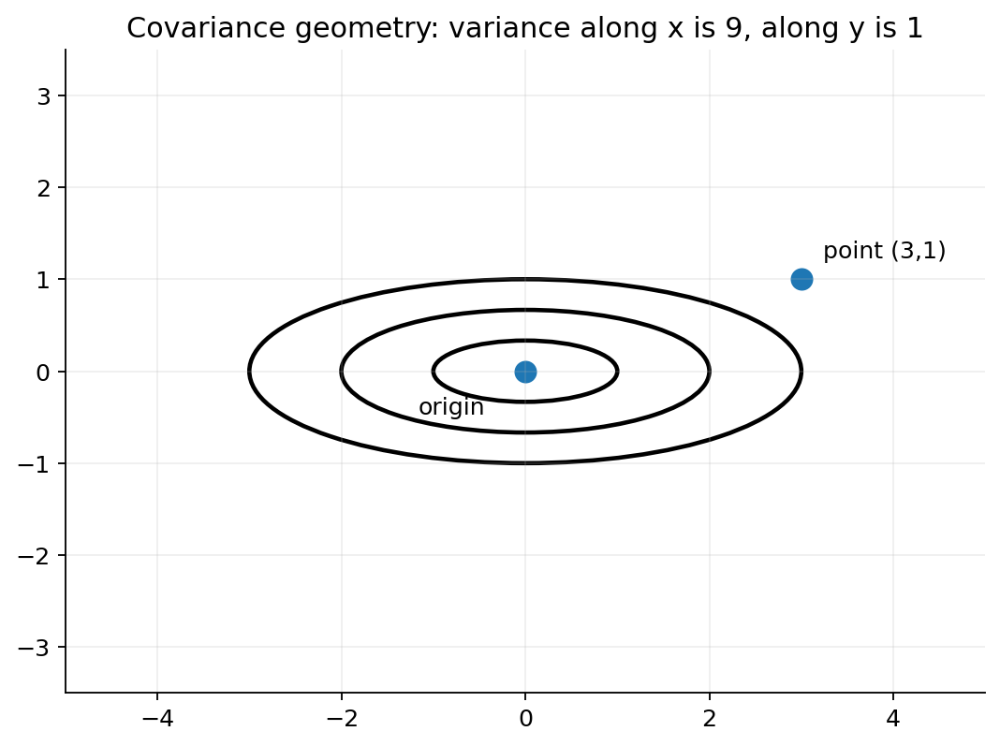
Fig. 32 شکل ۳ـ۱۰. نمونهای از خطوط همفاصله در هندسهٔ دارای پراکندگی ناهمسان؛ محور افقی پراکندگی مجاز بیشتری دارد. تصویر تألیفی است.#
مثال همبستگی و جهت تغییر#
برای \(\Sigma=\begin{bmatrix}2&1\\1&2\end{bmatrix}\)، وارون آن \(\frac13\begin{bmatrix}2&-1\\-1&2\end{bmatrix}\) است. دو اختلاف \(a=(1,1)\) و \(b=(1,-1)\) را مقایسه کنید. هر دو Euclidean برابر \(\sqrt2\) دارند؛ اما
جهت اول همراه با همبستگی مثبت دو ویژگی است و بنابراین «طبیعیتر» تلقی میشود؛ دومی در جهت مخالف تغییر میکند و غیرمعمولتر است. این تحلیل به کیفیت برآورد کوواریانس وابسته است. اگر تعداد نمونه کم یا ویژگیها شدیداً وابسته باشند، ماتریس ممکن است تکین و وارون آن ناپایدار باشد؛ در عمل باید از منظمسازی/برآورد مقاوم یا کاهش بُعدِ آگاهانه کمک گرفت. همچنین تفسیر احتمالاتی آستانهٔ Mahalanobis معمولاً به فرضهای توزیعی (مثلاً تقریب نرمال) نیاز دارد؛ خود فرمول بدون فرض نرمال هم محاسبهپذیر است.
۳ـ۱۰. ترکیب انواع ویژگیها: فاصلهٔ Gower و قراردادهای حذف#
باز به مثال فروشگاه برگردیم. یک مشتری ویژگیهای اسمی، ترتیبی، مبلغ خرید، استفاده از اپلیکیشن و وجود یک رخداد نادر دارد. Euclidean روی کدهای ۱ و ۲ِ «منطقه» و «کانال» بدون معناست؛ Jaccard هم بهتنهایی اطلاعات مبلغ را حذف میکند. یک راه عملی، تبدیل هر ویژگی به ناشباهتی بین صفر و یک و ترکیبِ با وزن روشن است.
برای \(m\) ویژگی، بنویسیم:
در اینجا \(d_{ij}^{(f)}\in[0,1]\) سهم ناهماهنگی ویژگی \(f\) است؛ \(w_f\ge0\) اهمیت آن را مشخص میکند؛ و \(\delta_{ij}^{(f)}\) نشان میدهد آیا این ویژگی برای این زوج قابلمحاسبه و مرتبط است. برای مقدار گمشده در یکی از دو رکورد، \(\delta=0\)؛ برای ویژگی دودویی نامتقارن که در هر دو صفر است نیز میتوان \(\delta=0\) قرار داد. سایر موارد عموماً \(\delta=1\) دارند.
یک مثال عددی کامل با پنج ویژگی#
دو مشتری فرضی:
ویژگی |
نوع و قرارداد |
مشتری A |
مشتری B |
سهم \(d_f\) |
در مخرج؟ |
|---|---|---|---|---|---|
منطقه |
اسمی |
شمال |
شمال |
\(0\) |
بله |
سطح خدمت |
ترتیبی، ۴ سطح |
۲ |
۴ |
\(2/3\) |
بله |
خرید |
عددی، بازهٔ معتبر ۲۰۰ |
۱۰۰ |
۱۴۰ |
\(40/200=0.2\) |
بله |
استفاده از اپ |
دودویی متقارن |
۱ |
۰ |
\(1\) |
بله |
رخداد نادر |
دودویی نامتقارن |
۰ |
۰ |
— |
خیر |
با وزن برابر و با قرارداد حذفِ توافق صفر ـ صفر در رخداد نادر، محاسبهٔ نهایی:
چرا مخرج ۴ است نه ۵؟ چون در این مسئله، «هیچیک رخداد نادر را نداشتهاند» شاهد مقایسهٔ مثبت/منفی نیست و قرار نبود در امتیاز نزدیکی دخالت کند. اگر در کاربرد دیگری نبود رخداد نیز اطلاعات ارزشمند داشته باشد، باید نوع ویژگی و مخرج متفاوت تعریف شوند.

Fig. 33 شکل ۳ـ۱۱. سهم چهار ویژگی در فاصلهٔ مختلط؛ ویژگی نامتقارن با توافق صفر ـ صفر از صورت و مخرج حذف میشود.#
مسئلهٔ جدی دادهٔ گمشده و مقایسهٔ زوجبهزوج#
روش حذفِ ویژگی ناموجود برای هر زوج میتواند نتیجهای تولید کند که متریک نباشد. سه مشاهده را ببینید:
اگر ناشباهتی، میانگین قدرمطلق اختلاف روی ویژگیهای مشترک باشد، \(d(X,Y)=0\)، \(d(Y,Z)=(1+0)/2=0.5\) و \(d(X,Z)=1\). پس \(d(X,Z)=1>0+0.5\)؛ شرط مثلثی از دست رفته است. حتی \(d(X,Y)=0\) در حالی که یکی دارای مقدار گمشده است، از نظر هویتِ رکورد کامل مشکل دارد. بنابراین برای الگوریتمی که متریک لازم دارد، این انتخاب بیخطر نیست.

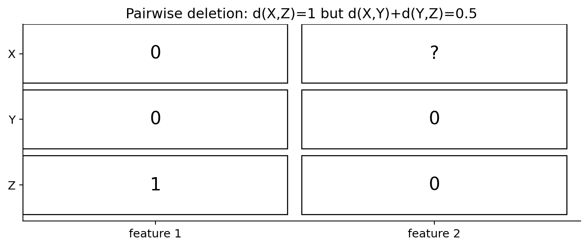
Fig. 34 شکل ۳ـ۱۲. مثال نقض مثلثی با حذف زوجبهزوج مقدار گمشده. هیچ مقداری بهطور پنهانی صفر نشده است.#
اگر هیچ ویژگی مشترک و قابل محاسبهای نباشد، مخرج صفر و فاصله نامعین خواهد بود؛ نباید بدون قرارداد کارشناسی، آن را صفر یا یک کرد. این موضوع در دادهکاوی پزشکی، نظرسنجی و دادهٔ صنعتی با حسگرهای غیرفعال اهمیت عملی دارد.
وزنها و آستانهها را چطور انتخاب کنیم؟#
یک وزن بزرگ برای «رخداد نادر» ممکن است تفاوت یک ویژگی را بر کل الگوی رفتار غالب کند؛ وزن کوچک ممکن است رخداد مهم را ناپدید کند. وزنها باید از سؤال کاربردی، هزینهٔ اشتباه، نظر متخصص و/یا اعتبارسنجی بیرون از نمونه ناشی شوند. برای نمایش قابل توضیح، بهتر است بردار سهمهای ویژگی نیز در کنار فاصلهٔ کل نگهداری شود؛ کد همراه فصل این سهمها را برمیگرداند.
۳ـ۱۱. توزیعها را با رکوردها اشتباه نگیریم: KL و Jensen–Shannon#
تا اینجا دو مشاهده یا دو مجموعه را مقایسه کردیم. اکنون فرض کنید میخواهیم دو توزیع احتمال برای نوع کالای خریداریشده را مقایسه کنیم، نه دو سبد منفرد را. برای فضای گسستهٔ مشترک \(\{1,\ldots,k\}\)، دو توزیع \(P=(p_i)\) و \(Q=(q_i)\) داریم که \(p_i,q_i\ge0\) و \(\sum_i p_i=\sum_i q_i=1\).
واگرایی Kullback–Leibler (KL) با لگاریتم پایهٔ ۲ چنین است:
این رابطه میسنجد اگر رخدادها مطابق \(P\) رخ دهند، استفاده از مدل احتمالاتی \(Q\) چه مقدار هزینهٔ لگاریتمی مورد انتظار اضافی ایجاد میکند. واحد با لگاریتم پایهٔ ۲، «بیت» است. برخلاف فاصلهٔ Euclidean، KL متقارن نیست و در صورت \(p_i>0,q_i=0\) برابر بینهایت میشود.
مثال دستی دو نوع کالا#
فرض کنید \(P=(0.75,0.25)\) و \(Q=(0.50,0.50)\). آنگاه:
نابرابری دو جواب نشان میدهد KL فاصلهٔ متریک نیست. همچنین مقدار صفر KL فقط هنگامی رخ میدهد که دو توزیع (در شرایط تعریف متعارف) برابر باشند؛ واگرایی KL نامنفی است، اما میتواند از یک بیشتر شود. برای نمونههای کم، تخمین فراوانی صفر ممکن است KL را نامتناهی کند؛ سیاست هموارسازی باید پیشاپیش مشخص باشد.
Jensen–Shannon (JS) divergence راهی متقارن برای مقایسه است. با \(M=(P+Q)/2\):
برای همین مثال \(M=(0.625,0.375)\) و \(\mathrm{JS}(P,Q)\approx0.04879\) بیت است. مقدار \(\sqrt{\mathrm{JS}(P,Q)}\approx0.22090\)، با پایهٔ لگاریتم ثابت، یک فاصلهٔ متریک روی توزیعهای احتمال است. در مقابل خودِ JS معمولاً «واگرایی» نامیده میشود؛ تبدیل ریشهای برای استفاده بهعنوان متریک اهمیت دارد. برای پایهٔ ۲، JS بین ۰ و ۱ بیت است.

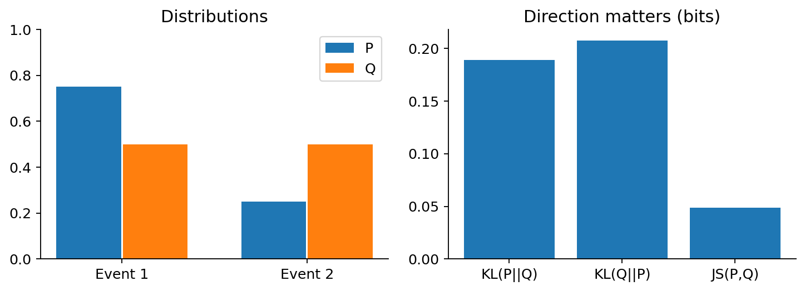
Fig. 35 شکل ۳ـ۱۳. واگرایی دو توزیع ساختگی: KL جهتدار است و JS متقارن؛ محور عمودی سمت راست در واحد بیت است.#
فرق با Jaccard: Jaccard برای مجموعهٔ اقلام یا بردار حضور/عدم حضور طراحی شده است؛ KL/JS برای توزیع نرمالشده. اگر ۱۰۰ خرید برای یک کالا ثبت شود و تنها یک خرید برای کالایی دیگر، در توزیع احتمالاتی وزنهای متفاوتی دارند؛ ولی در Jaccard مجموعهای، هر دو صرفاً «حاضر» هستند. پیش از انتخاب معیار باید مشخص کنیم داده را به چه موجودیتی تبدیل کردهایم.
۳ـ۱۲. اطلاعات متقابل: شباهت بین متغیرها، نه لزوماً بین رکوردها#
در برخی پروژهها هدف یافتن «مشتری مشابه» نیست؛ میخواهیم بدانیم آیا دو ویژگی به هم وابستهاند. برای مثال، آیا «نوع دستگاه» و «نوع خرید» با هم مرتبطاند؟ Pearson فقط وابستگی خطی را در شکل متداول خود میسنجد و ممکن است رابطهٔ غیرخطی را نشان ندهد.
اطلاعات متقابل (Mutual Information؛ MI) برای متغیرهای گسستهٔ \(X,Y\) تعریف میشود:
وقتی \(X,Y\) مستقل باشند، \(p(x,y)=p(x)p(y)\) و هر جملهٔ مثبت لگاریتم ۱ میشود، پس \(I(X;Y)=0\). MI نامنفی و متقارن است، ولی واحد آن بیت و مقدارش به آنتروپی/تعداد حالتها وابسته است؛ بهطور خام نمیتوان MI دو مسئله با دامنهٔ متفاوت را مثل «درصد شباهت» مقایسه کرد.
مثال دستی که باید بتوان در کلاس حل کرد#
فرض کنید \(X\) و \(Y\) دودویی و دقیقاً برابرند: \(p(0,0)=p(1,1)=1/2\) و سایر احتمالها صفرند. احتمال حاشیهای هر حالت \(1/2\) است. دو جملهٔ غیرصفر داریم:
اگر هر چهار ترکیب \((0,0),(0,1),(1,0),(1,1)\) احتمال \(1/4\) داشته باشند، \(I(X;Y)=0\). در اولی آگاهی از \(X\) مقدار \(Y\) را کاملاً مشخص میکند؛ در دومی آگاهی از \(X\) چیزی به پیشبینی \(Y\) اضافه نمیکند. از دید آنتروپی نیز \(I(X;Y)=H(X)+H(Y)-H(X,Y)\) است؛ این رابطه نشان میدهد اطلاعات متقابل همان کاهش عدمقطعیت مشترک در مقایسه با دو توصیف مستقل است. همچنین \(I(X;Y)=D_{KL}(p(x,y)\Vert p(x)p(y))\)؛ در این رابطه KL بین توزیع مشترک و حاصلضرب توزیعهای حاشیهای است، نه بین دو مشاهدهٔ منفرد. با دادهٔ محدود، برآورد MI مثبتِ کاذب ممکن است ایجاد شود؛ تعداد حالتها، هموارسازی و تصحیح سوگیری برآوردگر اهمیت دارند.

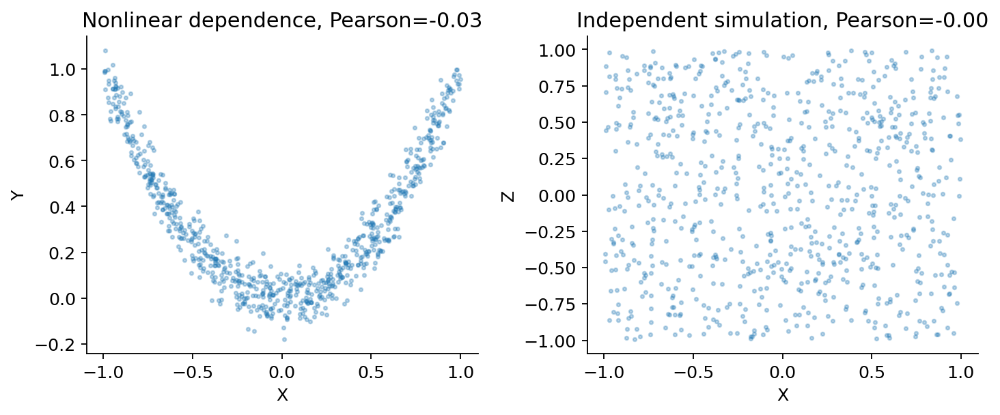
Fig. 36 شکل ۳ـ۱۴. دو مجموعهٔ ساختگی: در سمت چپ وابستگی غیرخطی آشکار است ولی Pearson نزدیک صفر است؛ سمت راست نمونهٔ مستقل است. این تصویر محاسبهٔ MI نیست، انگیزهٔ استفاده از معیار وابستگی غیرخطی را نشان میدهد.#
تفاوت مهم: MI بین دو متغیر تصادفی تعریف میشود. استفاده از آن بهعنوان «فاصلهٔ مستقیم دو مشتری» بدون یک مدل احتمالاتی یا تبدیل تعریفشده، اشتباه مفهومی است. برای انتخاب ویژگی، سنجش افزونگی یا تحلیل وابستگی مناسب است؛ بحث معیارهای اطلاعاتی پیچیدهتر از دامنهٔ این فصل خارج است.
۳ـ۱۳. کرنلها و واگرایی Bregman: وقتی هندسهٔ پنهان را خودمان میسازیم#
کرنل چیست و چه نسبتی با «شباهت» دارد؟#
گاهی دادهها در فضای اصلی با یک خط یا صفحه بهخوبی جدا نمیشوند، ولی در یک نمایش دیگر چنیناند. یک تابع کرنل (Kernel Function) میتواند ضرب داخلی را در فضای ویژگی دیگری بازنمایی کند:
اگر کرنل با یک فضای ضرب داخلی حقیقی سازگار باشد، برای هر مجموعهٔ محدود \(x_1,\ldots,x_n\)، ماتریس Gram با درایههای \(K_{ij}=k(x_i,x_j)\) باید متقارن و نیمهمعین مثبت باشد؛ یعنی برای هر بردار \(a\):
این خاصیت، دلیل ریاضی استفاده از ماتریس کرنل در بسیاری از الگوریتمهاست. هر تابعی که به دلخواه اسم «شباهت» داشته باشد، ضرورتاً کرنل معتبر نیمهمعین مثبت نیست. برای مثال، کرنل Gaussian/RBF چنین است:
برای \(x=y\) مقدار یک است و با زیادشدن فاصله کاهش مییابد؛ اما انتخاب \(\gamma\) تعیین میکند چه مقیاسی از فاصله «نزدیک» محسوب شود. انتخاب نامناسب آن میتواند اکثر زوجها را تقریباً نامشابه یا تقریباً یکسان کند.
برای سه نقطهٔ تکبعدی \(0,1,2\) و \(\gamma=1\)، داریم:

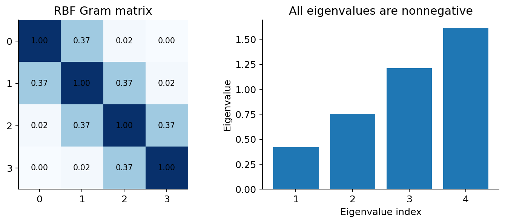
Fig. 37 شکل ۳ـ۱۵. ماتریس RBF برای چهار نقطهٔ یکبعدی و مقدارهای ویژهٔ آن. این نمودار یک نمونه است؛ نیمهمعینبودن برای RBF معتبر از استدلال عمومی نتیجه میشود، نه صرفاً مثبتشدن چهار مقدار ویژهٔ شکل.#
احتیاط آموزشی: در بحث کرنل، هدف ما تکرار فصل ماشین بردار پشتیبان (SVM) درس یادگیری ماشین نیست؛ نکته این است که تعریف شباهت میتواند یک هندسهٔ جدید برای داده بسازد. کاربردهای خوشهبندی کرنلی و تحلیل گراف در فصل نهم دنبال میشوند.
واگرایی Bregman، کوتاه اما با یک مثال دقیق#
برای یک تابع هموار و محدبِ اکید \(\phi\)، واگرایی Bregman چنین نوشته میشود:
این عبارت فاصلهٔ عمودی بین مقدار تابع در \(x\) و صفحهٔ مماس تابع در \(y\) را اندازه میگیرد؛ بهدلیل تحدب نامنفی است. ولی معمولاً نه متقارن است و نه نامساوی مثلثی را رعایت میکند. در مثال یکبعدی \(\phi(t)=t^2\)، مشتق \(2t\) است؛ بنابراین:
برای \(x=0,y=1,z=2\)، مقدار \(D_\phi(0,2)=4\) و مجموع \(D_\phi(0,1)+D_\phi(1,2)=2\) است؛ پس این واگرایی متریک نیست. نکتهٔ ارزشمند بحث Bregman در Tan §۲٫۴٫۸ آن است که «هزینهٔ اختلاف» میتواند به شکل توابع محدب گوناگون مدل شود؛ مساویگرفتن همهٔ چنین هزینههایی با فاصلهٔ متریک خطاست.
۳ـ۱۴. هندسهٔ گراف و دادهٔ پیچیده: کوتاهترین مسیر، نه خط مستقیم#
گاهی دو مشتری بهسبب ارتباط در یک شبکه، یا دو مکان بهسبب اتصال جادهها، «نزدیک» هستند. فرض کنید گرافی با چهار رأس \(A,B,C,D\) داریم و فقط یالهای \(A-B\)، \(B-C\) و \(C-D\) با وزن ۲ موجودند. مختصات هندسی را طوری بگذارید که \(A=(0,0)\) و \(D=(0,2)\) باشد. فاصلهٔ Euclidean برابر ۲ است، اما چون یال مستقیمی وجود ندارد، کوتاهترین مسیر مجاز از \(A\) به \(D\) از \(B\) و \(C\) میگذرد و طولش \(2+2+2=6\) است.

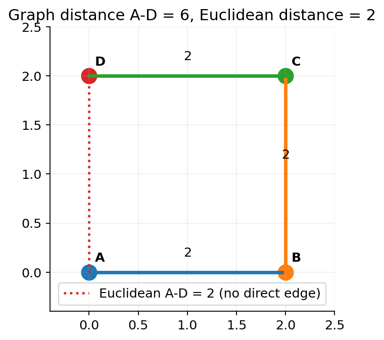
Fig. 38 شکل ۳ـ۱۶. فاصلهٔ گرافی با فاصلهٔ هندسی محیط برابر نیست؛ در دادهٔ شبکهای، مجازبودن مسیر تعیینکننده است.#
با وزنهای نامنفی میتوان کوتاهترین مسیر را بهعنوان فاصله بر روی رأسهای متصل محاسبه کرد. اگر دو رأس در مؤلفههای مجزا باشند، فاصلهٔ کوتاهترین مسیر میتواند بینهایت تلقی شود و نیاز به سیاست کاربردی دارد. گراف جهتدار ممکن است فاصلهٔ نامتقارن ایجاد کند؛ هزینهٔ مسیر با عوضشدن جهت لزوماً یکسان نیست. در دادهٔ شبکهای، خود توپولوژی و تعریف وزن یال همانقدر مهماند که الگوریتم کوتاهترین مسیر.
ارتباط با دادهکاوی: در خوشهبندی، شناسایی جامعه، کشف رفتارهای مرتبط و جستوجوی الگوهای گرافی، معیار نزدیکی ممکن است به ساختار اتصال وابسته باشد. شرح الگوریتمهای پیشرفتهٔ گراف در فصلهای ششم و نهم میآید؛ اینجا هدف روشنکردن مفهوم هندسهٔ مناسب است.
۳ـ۱۵. بُعد بالا و شبهبرابری فاصلهها: حدّ اعتبار «نزدیکی»#
در فضای دوبعدی، نزدیکبودن نقطه را اغلب میتوان دید. اما اگر هر مشاهده هزاران ویژگی داشته باشد، دو مشکل ظاهر میشود: (۱) بسیاری از مؤلفهها بیاهمیت یا تکراریاند؛ (۲) در بعضی مدلهای داده، فاصلهٔ نزدیکترین و دورترین مشاهده نسبت به مقیاس معمول فاصلهها به هم نزدیک میشوند. این اثر را «تمرکز فاصله» مینامند.
یک آزمایش قابل بازتولید: برای هر بُعد \(p\in\{2,5,10,25,50,100,200\}\)، دو مجموعهٔ ۴۰۰۰تایی از بردارهای مستقل نرمال استاندارد تولید میکنیم و فاصلهٔ Euclidean متناظر هر زوج را میسنجیم. سپس ضریب تغییرات \(CV=\mathrm{std}(d)/\mathrm{mean}(d)\) را محاسبه میکنیم. در این مدل مصنوعی، با افزایش بُعد، تغییر نسبی فاصلهها کاهش مییابد.

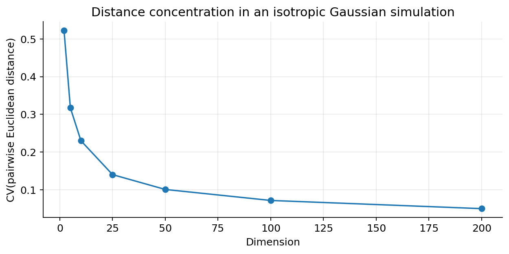
Fig. 39 شکل ۳ـ۱۷. شبیهسازی ساختگی با بذر ثابت: کاهش ضریب تغییرات فاصلهٔ دو نقطهٔ تصادفی در بُعد بالا. این نتیجه محدود به این مدل و روش نمونهگیری است؛ هیچ ادعایی دربارهٔ همهٔ مجموعهدادههای واقعی نمیکند.#
چرا از این نمودار نمیتوان نتیجه گرفت «Euclidean در بُعد بالا همیشه بیفایده است»؟ زیرا هندسهٔ دادهٔ واقعی ممکن است روی خمینهٔ کمبُعد، یک زیرمجموعهٔ تنک یا ساختار خوشهای قرار گرفته باشد. برخی متریکها در مسئلهٔ خاص همچنان خوب عمل میکنند. باید کنتراست فاصله، پایداری همسایهها و نتیجهٔ وظیفهٔ اصلی را روی دادهٔ واقعی بررسی کرد. حذف ویژگی، وزندهی یا کاهش بُعد تنها در صورت حفظ اطلاعات مرتبط با مسئله سودمند است؛ این مباحث در فصل چهارم با تفصیل ادامه مییابند.
۳ـ۱۶. انتخاب معیار مناسب: یک پروتکل برای دادهکاوی قابل دفاع#
انتخاب معیار را بهجای «کدام تابع در کتابخانه موجود است؟» با پنج سؤال آغاز کنید:
۱. واحد مشاهده چیست؟ یک سبد، سند، مشتری، توالی، توزیع یا رأس گراف؟ شباهت دو توزیع را با فرمول حضور کالای مشترک اندازه نمیگیریم.
۲. چه تغییری نباید شباهت را عوض کند؟ افزایش حجم سند به نسبت ثابت (Cosine)، تغییر سطح پایهٔ سری (Pearson)، یا جایگزینی کد عددی برچسب اسمی (nominal matching). نام این خواسته ناوردایی (Invariance) است.
۳. صفر چه معنایی دارد؟ صفر واقعی، نبود کالا، دادهٔ گمشده و صفر ناشی از سانسور اندازهگیری یک چیز نیستند. اگر نبود همزمان کالاها اطلاعات نیست، Jaccard معمولاً از SMC مناسبتر است.
۴. ویژگیها چه توزیع و وابستگیای دارند؟ در دادهٔ عددی، مقیاس و همبستگی میتوانند نتیجهٔ Euclidean را عوض کنند؛ در دادهٔ مختلط، سهم هر نوع ویژگی و سیاست مخرج باید صریح باشد.
۵. نتیجه را با چه معیار مستقلی میسنجیم؟ اگر هدف خوشهبندی مشتریان برای یافتن خریدهای مرتبط است، تنها زیبایی شکل یا جدایی ظاهری خوشه کافی نیست؛ به ثبات گروهها در نمونههای دیگر، تعبیرپذیری، هزینهٔ اشتباه و پیامد کاربردی هم نگاه کنید. اگر برچسب یا هدف بیرونی در دسترس است، معیار را روی دادهٔ نگهداشتهشده بسنجید؛ آن داده نباید در انتخاب وزن یا مقیاس مصرف شده باشد.
نوع داده یا هدف |
گزینهٔ آغازین قابل دفاع |
هشدار مهم |
|---|---|---|
عددی هممقیاس و جهت مستقل |
\(L_1\) یا \(L_2\) |
واحد، دادهٔ پرت، وزن |
عددی با پراکندگی و همبستگی مشخص |
Mahalanobis |
کوواریانس تکین، تخمین ناپایدار |
سبدهای کالا یا نشانگرهای حضور تنک |
Jaccard |
قرارداد هر دو مجموعهٔ خالی |
سند یا بردار شمارش واژگان |
Cosine |
وزنسازی واژه، بردار صفر |
الگوی سری با اختلاف سطح پایه |
Pearson |
شیفت زمانی، روند، ثابتبودن بردار |
اسمی و ترتیبی و عددی با هم |
Gower مانند |
وزن، مخرج زوجی، متریکنبودن احتمالی |
دو توزیع احتمال |
KL یا \(\sqrt{JS}\) |
صفرهای احتمال و نامتقارنبودن KL |
وابستگی دو ویژگی |
Mutual Information |
سوگیری برآورد، نه فاصلهٔ دو رکورد |
رأسهای گراف متصل |
کوتاهترین مسیر |
جهتداری، وزن یال و قطع اتصال |

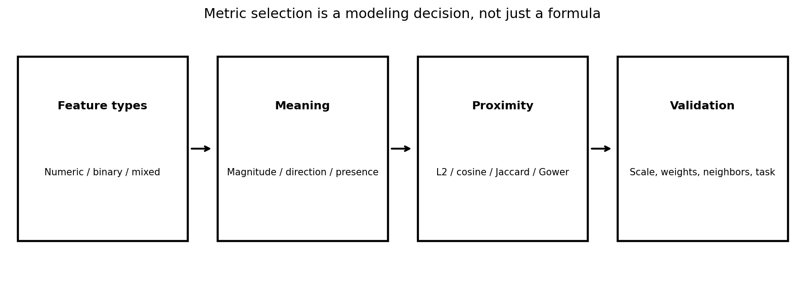
Fig. 40 شکل ۳ـ۱۸. جریان تصمیم برای انتخاب معیار: نوع داده → معنای شباهت → معیار → ارزیابی. هیچ معیار «جهانیِ بهترین» وجود ندارد.#
یک شبهکد کوتاه برای انتخاب و ارزیابی#
INPUT: training_data, validation_data, semantic_schema, task
1. Determine observation granularity and feature measurement scales.
2. Define desired invariances (scale? translation? presence?).
3. Specify candidate metrics and missing/zero policies.
4. Fit all learned preprocessing ONLY on the training data.
5. For each metric:
compute neighbors/communities/patterns on training data;
evaluate stability and task outcome on held-out data;
record sensitivity to weights and plausible preprocessing.
6. Choose with evidence; archive metric, parameters, units, and code.
OUTPUT: documented metric and reproducible evaluation report
چرا شبهکد معیار را از روی یک برچسب آموزش نمیدهد؟ به این دلیل که تصمیم در دادهکاوی اغلب اکتشافی است؛ ممکن است برچسب مرجع نداشته باشیم. در این حالت شواهد پایداری، انسجام تفسیر و اطلاعات بیرونی جایگزین ادعای قطعی «دقت» میشوند. اگر مرجع خارجی داریم، باید تفکیک دادهٔ آموزش/اعتبارسنجی محترم بماند.
۳ـ۱۷. آزمایشگاه عملی: از قلم و کاغذ تا Python و Notebook#
تمام مقدارهای عددی اصلی این فصل را میتوان بدون اتصال اینترنت و با Python بازتولید کرد. فایل chapter03_examples.py شامل توابع خوانا برای Minkowski، شمارش توافق دودویی، Jaccard، SMC، Cosine، Pearson، فاصلهٔ مختلط Gower، KL، JS، اطلاعات متقابل و Mahalanobis قطری است. در همهٔ تابعها فرضهای حساس مانند بردار صفر، طول متفاوت و مخرج صفر مدیریت یا آشکار گزارش میشوند.
نمونهٔ اجرا:
python chapter03_examples.py
python -m unittest test_chapter03_examples.py -v
در ویندوز با دوبار کلیک روی RUN_CHAPTER03_EXAMPLES.cmd، فایل گزارش chapter03_results.json و خروجی آزمونها تولید میشود. فایل chapter03_examples.ipynb نیز همان محاسبات را بهترتیب آموزشی اجرا و نتیجه را بهصورت جدول نمایش میدهد. برای شروع، به NumPy یا SciPy نیازی ندارید؛ ماژول محاسبات اصلی فقط به کتابخانهٔ استاندارد Python نیاز دارد.
گام اول: تغییر همسایه با Minkowski#
دادهٔ \((A,B,C)\) را وارد تابع minkowski کنید و برای \(r=1,2,\infty\) مقدارها را با محاسبهٔ بخش ۳ـ۱ مقایسه کنید. تفسیر خروجی: تغییر معیار «خطای محاسباتی» نیست؛ فرض دربارهٔ هزینهٔ اختلافها را عوض کردهاید. سپس \(B\) را از \((3,4)\) به \((6,8)\) تغییر دهید و به تغییر فاصلهٔ Euclidean و ثابتماندن Cosine با \(A=(0,0)\) توجه نکنید—Cosine برای بردار صفر تعریف نشده است؛ بهجای آن بردار مرجع غیرصفر \(A'=(1,2)\) انتخاب کنید. این اصلاح ساده نشان میدهد که باید دامنهٔ تعریف معیار را در طراحی آزمایش لحاظ کرد.
گام دوم: اثر انبوه صفرها#
برای ۱۰۰۰ کالا و دو سبد {a,b} و {a,c}، برنامه بهدرستی \(q=1,r=1,s=1,t=997\)، سپس \(SMC=0.998\) و \(Jaccard=1/3\) میدهد. با زیادکردن تعداد کالاهایی که در هیچ سبدی نیستند، تنها SMC به یک نزدیکتر میشود. این آزمایش یک مثال نقضِ انتخاب نادرست معیار است.
گام سوم: Gower و حذف ویژگی نامرتبط#
در مثال پنجویژگی، برنامه امتیاز \(0.4666667\) و فهرست سهم چهار ویژگی فعال را چاپ میکند. اگر رخداد نامتقارن برای یکی از مشتریان ۱ شود، آن ویژگی وارد صورت و مخرج شده و نتیجه عوض میشود. اگر هر دو مشتری در همهٔ ویژگیهای قابل استفاده مقدار گمشده داشته باشند، برنامه مقدار NaN گزارش میدهد؛ این وضعیت را نباید به «شباهت کامل» تفسیر کرد.
گام چهارم: مقایسهٔ توزیعها#
دو توزیع \(P,Q\) را به تابعهای kl و js بدهید. خروجیها: \(KL(P\Vert Q)\approx0.18872\)، \(KL(Q\Vert P)\approx0.20752\)، \(JS(P,Q)\approx0.04879\)، و \(\sqrt{JS}\approx0.22090\). با قراردادن \(P=(1,0)\) و \(Q=(0,1)\)، KL بینهایت ولی JS برابر یک بیت میشود. این تفاوت، اهمیت دامنه و هموارسازی را نشان میدهد.
گام پنجم: آزمایشگاه تعاملی بدون نصب#
در پوشهٔ downloads فایل RUN_INTERACTIVE_ONE_CLICK.html قرار دارد. با بازکردن آن در مرورگر، میتوان مختصات \(B\) و \(C\) و معیار \(L_1\)، \(L_2\) یا \(L_\infty\) را تغییر داد و نزدیکترین همسایه و فاصلهها را فوراً دید. HTML کاملاً آفلاین است، صرفاً یک تمرین مصورسازی را اجرا میکند و به کتابخانهٔ آنلاین یا ارسال داده نیاز ندارد. این ابزار بهجای اجرای تحلیل علمی روی دادهٔ واقعی نیست؛ یک محیط تعاملی برای فهم هندسهٔ معیارهاست.
نگاه به کد کتابخانههای علمی#
تابعهای کتابخانهایِ SciPy و scikit-learn برای دادهٔ واقعی معمولاً کاراترند؛ اما باید قراردادهای آنها را بشناسیم. برای مثال scipy.spatial.distance.jaccard ناشباهتی Jaccard را برمیگرداند، نه شباهت؛ تابع sklearn.metrics.pairwise.cosine_similarity شباهت کسینوسی را محاسبه میکند. قرارداد دو بردار همهصفر و نوع ورودی، در نسخههای کتابخانه اهمیت دارد. این فصل وابستگی اجباری به کتابخانههای ثالث ایجاد نمیکند تا مثالهای پایه روی Python نصبشده اجرا شوند.
۳ـ۱۸. تمرینهای پایانی و فعالیت کلاسی#
تمرین ۱، محاسباتی. برای \(A=(1,2)\)، \(B=(4,6)\) و \(C=(1,8)\)، مقدارهای \(L_1\)، \(L_2\) و \(L_\infty\) را حساب کنید؛ نزدیکترین همسایهٔ \(A\) را در هر معیار بیابید. آیا تغییر واحد یکی از محورها نتیجه را عوض میکند؟
تمرین ۲، مفهومی. یک مثال از دادهٔ پزشکی یا صنعتی معرفی کنید که توافق صفر ـ صفر باید در محاسبهٔ شباهت محاسبه شود؛ سپس مثال دیگری بیاورید که نباید محاسبه شود. تفاوت معنایی را صریح بنویسید.
تمرین ۳، عددی. دو سبد با ۲۰۰۰ کالا بهترتیب ۳ و ۴ کالای حاضر دارند که ۲ کالا مشترک است. \(q,r,s,t\)، سپس SMC، Jaccard و Hamming نسبی را محاسبه کنید. اگر ۸۰۰۰ قلم بدون خرید اضافه کنیم چه میشود؟
تمرین ۴، اثباتی. برای \(L_1\)، نامساوی مثلثی را با جمع نامساویهای تکمؤلفهای اثبات کنید. سپس با سه بردار \((1,0)\)، \((1,1)\)، \((0,1)\) نشان دهید \(1-\cos\) متریک نیست.
تمرین ۵، مقیاس ترتیبی. سه نگاشت مختلف برای سطوح «ضعیف، متوسط، خوب، عالی» پیشنهاد دهید. کدام نگاشت فرضِ فاصلههای برابر دارد؟ با یک مثال نشان دهید ترتیب نزدیکترین همسایه ممکن است تغییر کند.
تمرین ۶، عددی. با ویژگیهای مختلط «استان اسمی، رضایت ترتیبی پنجسطحی، مبلغ خرید با بازهٔ ۱۰۰۰، رخداد نادر دودویی نامتقارن»، سه مشتری فرضی بسازید. فاصلهٔ Gower را برای هر دو مشتری دستی محاسبه و مخرج را مستند کنید.
تمرین ۷، تحلیلی. مثال \(X=(0,NA)\)، \(Y=(0,0)\) و \(Z=(1,0)\) را با حذف زوجی بازتولید کنید. دقیقاً کدام شرط متریک نقض میشود؟ اگر در هیچ ویژگی مشترکی مقدار مشاهده نشود چه خواهید کرد؟
تمرین ۸، توزیعی. برای \(P=(0.9,0.1)\) و \(Q=(0.5,0.5)\) مقدارهای \(KL(P\Vert Q)\)، \(KL(Q\Vert P)\) و JS را محاسبه کنید. برای حالت \(Q=(1,0)\) نیز رفتار KL را توضیح دهید.
تمرین ۹، اطلاعات متقابل. برای جدول فراوانی یک متغیر دودویی با چهار خانهٔ برابر، MI را حساب کنید. سپس دو خانهٔ قطری را ۱۰ و دو خانهٔ دیگر را صفر قرار دهید و دوباره MI را بهدست آورید. چرا مقدار مثبت لزوماً رابطهٔ علّی نیست؟
تمرین ۱۰، هندسهٔ کوواریانس. برای \(\Sigma=\mathrm{diag}(16,1)\) و اختلاف \((4,1)\)، Euclidean و Mahalanobis را مقایسه کنید. اگر \(\Sigma\) تکین باشد، چرا وارونگیری مستقیم مشکل دارد؟
تمرین ۱۱، عملی. مجموعهای از ۳۰ سند کوتاه یا ۳۰ سبد ساختگی بسازید. برای Cosine/Jaccard یا \(L_1/L_2\) فهرست پنج همسایهٔ اول را پیدا کنید. اشتراک دو فهرست را بشمارید و معنای تغییر رتبه را توضیح دهید. دادههای واقعی بدون مجوز یا دادهٔ شخصی را در گزارش منتشر نکنید.
تمرین ۱۲، تحلیل خطا. عمداً یک ویژگی با مقیاس بسیار بزرگ به دادهٔ خود اضافه کنید. ابتدا Euclidean و سپس نسخهٔ نرمالشده را مقایسه کنید. آیا پاسخ «بهتر» را فقط از روی شکل میتوان تعیین کرد؟ یک معیار بیرونی پیشنهاد کنید.
تمرین ۱۳، کرنل. برای \(x\in\{0,1,2\}\)، \(K_{ij}=\exp(-\|x_i-x_j\|^2)\) را بهصورت عددی بسازید. تقارن و مثبتبودن مقادیر ویژه را بررسی کنید. توضیح دهید چرا این آزمونِ سهنقطهای اثبات معتبر بودن کرنل برای همهٔ دادهها نیست.
تمرین ۱۴، گراف. برای یک شبکهٔ چهاررأسی جهتدار، طول کوتاهترین مسیر \(u\to v\) و \(v\to u\) را محاسبه کنید. یک مثال بسازید که دو مقدار متفاوت شوند. چگونه این تفاوت بر خوشهبندی مبتنی بر فاصله تأثیر میگذارد؟
تمرین ۱۵، گزارش پژوهشی. یک صفحه بنویسید که در آن انتخاب معیار را از منظر «واحد مشاهده، نوع داده، ناوردایی، وزنها، دادهٔ گمشده، پایداری همسایه و ارزیابی بروننمونه» توجیه کند؛ هیچ عبارتی مانند «Euclidean چون معروفتر است» را بهتنهایی دلیل نپذیرید.
۳ـ۱۹. جمعبندی، مرزبندی و پیوند با فصل چهارم#
در این فصل دیدیم نزدیکبودن یک حقیقت مستقل از مدل نیست؛ یک تعریف عملیاتی است. برای ویژگی عددی هممقیاس، خانوادهٔ Minkowski طبیعی است؛ با همبستگی ویژگیها، هندسهٔ Mahalanobis مطرح میشود؛ برای حضور/عدم حضور تنک، Jaccard نسبت به توافق صفر ـ صفر حساسیت بیدلیل ندارد؛ برای بردارهای سند، Cosine جهت را میسنجد؛ برای دادهٔ مختلط، Gower به قرارداد و وزن شفاف نیاز دارد؛ برای توزیع، KL و JS معنا دارند؛ و برای رابطهٔ بین ویژگیها، MI را از فاصلهٔ بین رکوردها جدا کردیم.
همچنین چند دام را با مثال نقض نشان دادیم: تغییر رتبه با تغییر واحد؛ شباهت ۹۹٫۸درصدیِ گمراهکننده در دادهٔ تنک؛ غیرمتریکبودن \(1-\cos\)؛ نقض مثلثی در حذف زوجیِ دادهٔ گمشده؛ نامتقارن بودن KL؛ و ریشهدار بودن نقش مفروضات در Mahalanobis و کرنل.
اکنون سؤال طبیعی فصل چهارم این است: «چگونه داده را بدون تحریف و نشت اطلاعات آماده کنیم تا معیار انتخابی معنای درستی داشته باشد؟» در فصل چهارم ـ پیشپردازش، نمونهگیری و کاهش بُعد، نرمالسازی، راهبردهای فقدان مقدار، انتخاب/استخراج ویژگی و کنترل کیفیت اثر این تصمیمها را بهصورت الگوریتمی ادامه خواهیم داد.
راهنمای مراجعه به منابع علمی#
دو مرجع اصلیِ مبنای نگارش:
Jiawei Han, Jian Pei, Hanghang Tong. Data Mining: Concepts and Techniques, 4th ed., Elsevier/Morgan Kaufmann, 2023. فصل ۲، بخش ۲٫۳ «Similarity and distance measures»، صفحات چاپی ۴۳ تا ۵۵؛ زیربخشهای ۲٫۳٫۱ تا ۲٫۳٫۹. در این جزوه، انواع ویژگی، Minkowski، دادهٔ مختلط، Cosine، KL و بحث شباهت معنایی از این محدوده بازآرایی شدهاند.
Pang-Ning Tan, Michael Steinbach, Anuj Karpatne, Vipin Kumar. Introduction to Data Mining, 2nd ed., Pearson, 2019. فصل ۲، بخش ۲٫۴ «Measures of Similarity and Dissimilarity»، صفحات چاپی ۷۱ تا ۱۰۰؛ زیربخشهای ۲٫۴٫۱ تا ۲٫۴٫۱۰. در این جزوه، مفهوم متریک، تبدیل شباهت، MI، Kernel، Bregman، مسائل محاسبهٔ نزدیکی و معیار انتخاب از این محدوده بهره بردهاند.
مطالعهٔ تکمیلی و منابع وبِ بررسیشده:
SciPy — Jaccard dissimilarity: برای قرارداد تعریف در دادهٔ دودویی، مخرج و حالت هر دو بردار همهصفر.
SciPy — Jensen–Shannon distance: برای تمایز واگرایی JS و ریشهٔ آن بهعنوان فاصله.
scikit-learn — Cosine similarity: برای تفاوت «شباهت» و «فاصلهٔ ناشی از شباهت» در پیادهسازی.
scikit-learn — Mutual information scores: برای جایگاه MI و نسخههای نرمالشده/تصحیحشده در ارزیابی خوشهها.
Minkowski geometries — original teaching demonstration: فقط برای مقایسهٔ شکل توپهای واحد؛ تصویر کتاب یا وب در این بسته کپی نشده است.
یادداشت مالکیت و بازتولید: تمام نقطهها، سبدها، توزیعها، مثالهای دستی و ۱۸ شکل موجود در این فصل برای آموزش ساخته شدهاند؛ اینها «دادهٔ واقعی مشاهدهشده» نیستند. کد تولید شکلهای ریاضی و کد محاسبات در بسته موجود است. تصاویر بیرونی پس از بررسی صرفاً بهعنوان مرجع مفهومی به کار رفتهاند، نه بهعنوان تصاویر کپیشده در جزوه.